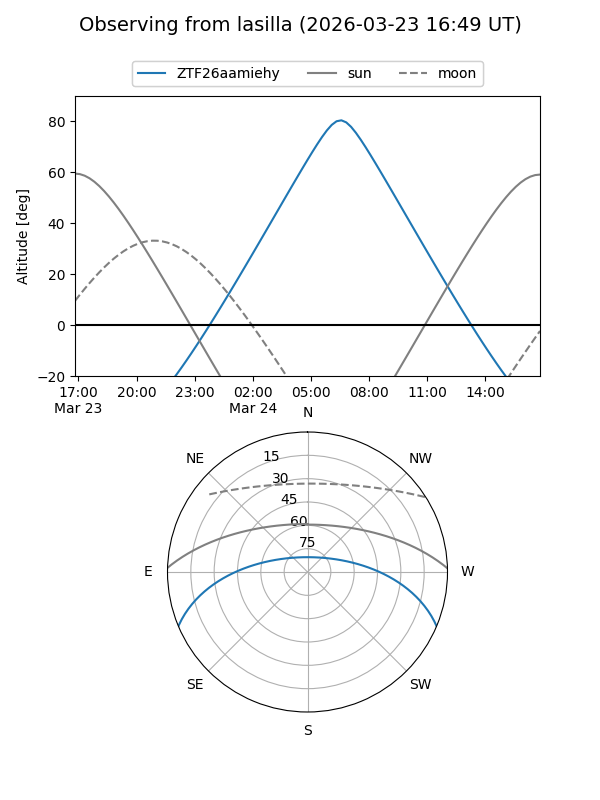
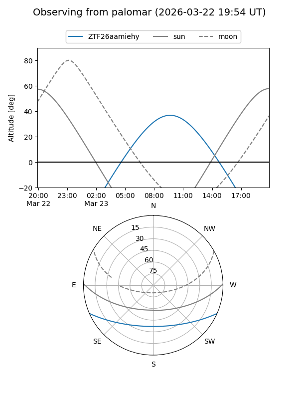

ZTF26aamiehy
Target ZTF26aamiehy at 2026-03-23 09:53
Aliases and brokers:
FINK: link
Lasair: link
ALeRCE: link
alt names
ZTF26aamiehy (ztf,fink_ztf)
Coordinates:
equatorial (ra, dec) = 208.4974,-19.59620
equatorial (HMS+DMS) = 13:53:59.39,-19:35:46.30
galactic (l, b) = (322.5572,+40.87964)
Flags:
Photometry:
last ztfg=17.54
1 ztfg detections
Lightcurve
Visibility


Additional plots